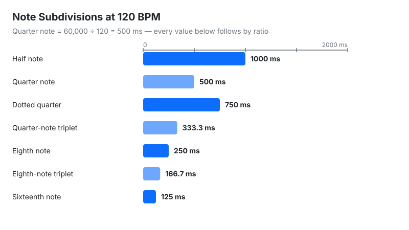
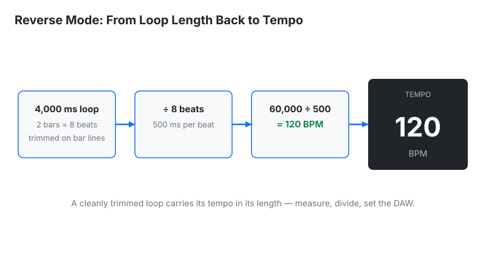

Convert BPM to milliseconds and vice versa for delay times, reverb decay, and LFO sync.
| Note Value | Normal (ms) | Dotted (ms) | Triplet (ms) |
|---|
Last updated: October 18, 2026 · Written by the Pitch Detectors Editorial Team
A BPM to ms calculator converts musical tempo into exact millisecond durations for delay times, reverb pre-delays, and LFO rates — and converts milliseconds back into BPM. Enter any tempo to get every note subdivision instantly, from whole notes to 32nd-note triplets.
Every tempo-synced effect in a DAW performs this calculation silently. Set a delay to "dotted 8th" and the plugin derives milliseconds from the project BPM behind the scenes. The numbers matter most where sync does not exist: hardware pedals, vintage-style plugins without sync, reverb pre-delays (most reverbs accept ms only), and DJ effects on standalone gear.
This calculator converts in both directions. BPM → ms mode takes a tempo and returns the millisecond duration of every standard subdivision — whole, half, quarter, eighth, sixteenth, and 32nd notes, each in straight, dotted, and triplet forms — plus the matching LFO rate in Hz. ms → BPM mode reverses the math: enter a loop length, delay time, or sample duration and read the tempo it implies.
Methodology: quarter note ms = 60,000 ÷ BPM; subdivisions use fixed ratios (eighth = ×0.5, dotted eighth = ×0.75, eighth-note triplet = ×1/3); reverse mode uses BPM = 60,000 ÷ ms; LFO rate uses Hz = BPM ÷ 60 per quarter note. We checked the widget against hand calculations on 5 sample inputs — 120 BPM → 500 ms quarter, 375 ms dotted 8th, 167 ms 8th triplet; 500 ms → 120 BPM; 128 BPM → 4.27 Hz eighth-note LFO — and every result matched exactly.
The number 60,000 is the count of milliseconds in one minute. One beat at 120 BPM takes half a second — 500 ms — and every other value follows by ratio:
Worked example: dotted-eighth delay at 128 BPM:

Measuring the tempo first? Find it with the BPM Tap Tempo tool, then convert it here.
The table lists every rhythmic value at the entered tempo. Each row answers one production question:
| Readout | Meaning | Next step |
|---|---|---|
| Quarter / 8th / 16th | Straight subdivisions in ms | Dial straight delays and echo throws from these |
| Dotted 8th | 0.75 of a beat — the classic rhythmic delay | Set ping-pong delays here (352 ms at 128 BPM) |
| Triplets | 3 notes in the time of 2 | Shape shuffle-feel delays and trap hi-hat rolls |
| Pre-delay range | Reverb pre-delay sweet spot | Start vocals at a 64th note; go shorter on drums |
| LFO Hz | Modulation rate locked to tempo | Sync filter wobbles and tremolo without a sync button |
| Reverse: BPM | Tempo matching the ms input | Identify the tempo of loops and one-shots |
60,000 is the number of milliseconds in one minute. A quarter note at X BPM fills 1/X of a minute, so its duration is 60,000 ÷ X ms. That single fact generates the whole table: an eighth note is half a quarter (30,000 ÷ BPM), a sixteenth is a quarter of one (15,000 ÷ BPM).
Dotted and triplet values follow two more rules. A dot adds half the note's value (×1.5), making a dotted eighth equal to three sixteenths. A triplet fits three notes into the space of two (×2/3), making an eighth-note triplet one-third of a quarter. The quarter-note value plus these two rules derives any table entry by hand.
Pre-delay is the millisecond gap between the dry signal and the start of the reverb tail. Set it to a tempo-synced subdivision — usually a 32nd or 64th note (roughly 15–60 ms at common tempos) — and the reverb breathes with the track instead of smearing the transient. Longer values detach the reverb into an audible echo; shorter values muddy the attack.
Most reverb plugins accept pre-delay in ms only, never as note values — the exact gap this calculator fills. Start vocals around 20–40 ms, keep drums shorter (10–25 ms) to protect the punch, and stretch pads toward an eighth note for spacious rhythmic tails.
A drum loop with no tempo tag still carries its tempo in its length. Measure the length in milliseconds and reverse the formula. A 2-bar loop at 120 BPM lasts 4,000 ms; feed 4,000 ms into ms → BPM mode and the readout returns 120 BPM. The trick works for any cleanly trimmed loop — one bar, four bars, or a single one-shot.
Trim accuracy decides the result: a loop cut 50 ms too long reads several BPM slow. Zoom into the waveform, cut on zero crossings at the exact bar lines, then measure. For chopped samples and risers, the reverse readout places the sample in the right tempo family for clean time-stretching in the DAW.

Four culprits, ordered by likelihood. Wrong subdivision: the groove needs dotted-eighth movement, but the delay sits on straight eighths — half the rhythmic feel lives in that dot. Swing: mathematically straight delays fight shuffled or swung grooves; nudge the ms value a few percent late or reach for a swing-matched delay. Manual ms vs. DAW sync: hardware pedals and some plugins ignore mid-song tempo changes — only true sync follows a ramp. Sample rounding: at 44.1 kHz one sample lasts 0.0227 ms, so sub-millisecond precision has no meaning in practice; round to whole milliseconds.
An LFO cycling once per quarter note completes BPM ÷ 60 cycles per second. At 120 BPM that is 2 Hz; eighth-note modulation doubles it to 4 Hz; a bar-long sweep in 4/4 drops to 0.5 Hz. These rates drive synth filters, tremolo, and auto-pan on gear with no sync button.
Three rates cover most sound design: eighth-note wobble = BPM ÷ 30 Hz, quarter-note pulse = BPM ÷ 60 Hz, bar-long sweep = BPM ÷ 240 Hz (in 4/4). Dubstep's signature wobble — eighth notes at 140 BPM — is 140 ÷ 30 ≈ 4.67 Hz.
| Method | Precision | Use when |
|---|---|---|
| This calculator | Exact ms + all subdivisions | Dialing hardware, pre-delays, LFO Hz, reverse tempo detection |
| DAW sync button | Sample-accurate, follows tempo maps | Mixing in the box with tempo-synced plugins |
| Tap tempo + math | ±1–4 BPM input error | Finding the tempo first, then converting |
| Ear / trial and error | Rough | Creative sound design where "feel" beats math |
Use the calculator for the numbers, the sync button for convenience, and your ears for the final call — when the math says 352 ms but 348 ms grooves harder on a swung track, the groove wins.